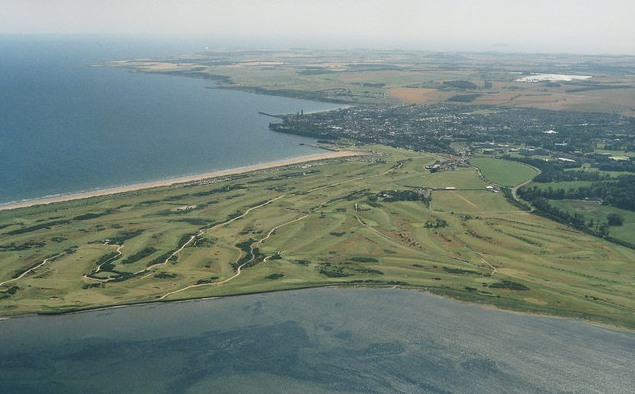

La premisa del día
Día relajado. Vuelo desde Edinburgh Airport a las 18:45. La logística clave: ir de St Andrews a EDI airport, lo que toma 1h45-2h en transporte público. Salir de St Andrews a las 13:00 a más tardar. Eso deja toda la mañana libre.
Por confirmar: hora exacta de salida del vuelo 1457. Si es 18:45 (como anotado), buen colchón hasta las 14:00 en St Andrews.
Itinerario
08:30 Desayuno tranquilo. Hacer las valijas, dejarlas armadas y en orden.
09:30 OPCIÓN A — Última caminata por West Sands romantico (recomendado). El cierre simbólico del viaje en la playa de Chariots of Fire. Llevar zapatillas. 30-45 min, vuelta por el lado del British Golf Museum hacia el centro.
09:30 OPCIÓN B — Caminata por el centro + último café. Si las piernas no dan más, recorrer la calle South Street, ver el St Salvator’s Quad otra vez, café último en Taste (148 North Street) o Northpoint Café (“Where Kate met Wills” — café de Market Street donde supuestamente se conocieron Kate Middleton y William; turistas pero divertido).
11:00 OPCIÓN C — Pasar por una destilería camino al aeropuerto: el bus 99 de Stagecoach pasa cerca de Eden Mill en Guardbridge, parada justo en el campus universitario. Si querés sumar una destilería antes de viajar, esta es la oportunidad — tour de 1h, ~£15.
12:00 Check-out del aparthotel. Dejar equipaje en bag storage por 30-60 min si almuerzan en el pueblo.
12:15 Almuerzo rápido: opciones simples y rápidas:
- The Glass House (80 North Street, café-restaurant casual)
- Mitchell’s Deli (South Street, sándwiches)
- Forgan’s (110 Market Street, escocés moderno)
- B Jannettas (helado, postre opcional histórico de St Andrews — desde 1908)
13:30 Salida hacia el aeropuerto. Dos opciones:
- OPCIÓN 1 — Tren + bus + tranvía (más rápido y
predecible):
- Bus 99 St Andrews → Leuchars Station (15 min, £3.20)
- Tren Leuchars → Edinburgh Waverley (1h05, £15-25)
- Tranvía Waverley → Airport (35 min, £7.50)
- Total ~2h15. Salir 13:30 para tener margen.
- OPCIÓN 2 — Bus directo X60 a Edimburgo + tranvía a
airport (más cómodo, menos cambio):
- X60 St Andrews → Edinburgh St Andrew Square (2h15, £10)
- Tranvía a airport (35 min, £7.50)
- Total ~3h. Salir 13:00 para tener margen.
16:00 Llegada a Edinburgh Airport (EDI). Check-in, security, lounge si tienen acceso. El UK security es estricto con líquidos — meter todo en bolsa transparente.
18:45 Vuelo LATAM 1457 EDI → GRU. ¡A casa!
Material para leer
Lo que dejamos sin ver (por si vuelven)
Cosas que el viaje no incluyó por tiempo pero valen otra visita:
- Stirling Castle (1h al noroeste de Edimburgo) — castillo de Mary Queen of Scots, mejor que Edinburgh Castle según muchos.
- Glasgow — la otra capital escocesa, más industrial y rockera. 1h en tren.
- Loch Ness y las Highlands — toda otra Escocia. Requiere 3-4 días mínimo.
- Isla de Skye — la postal escocesa por excelencia. 5h desde Edimburgo.
- Distillery tour en Islay — la isla del whisky ahumado (Laphroaig, Lagavulin, Ardbeg). Otro viaje entero.
- The Hebrides — islas norteñas, otro mundo.
- Edinburgh Festival Fringe (agosto) — la fiesta cultural más grande del mundo.
- Hogmanay (Año Nuevo escocés) — fuegos artificiales gigantes en Princes Street.
Recuerdo logístico
Tarjeta postal: las podés mandar desde el aeropuerto. Royal Mail tiene buzón en la zona pública del EDI airport.
Whisky duty-free: hay un duty-free de whisky en EDI airport con buena selección. Los single malt cask strength o distillery exclusives son los que valen comprar. Llevarse alguna botella de Highland Park, Springbank, o Glengoyne que tal vez no se consiguen en Argentina.
Llevar a Argentina: shortbread (galletas de manteca), whisky, té (Twinings o Earl Grey de cualquier marca), libros (Waterstones del aeropuerto), Tunnock’s Tea Cakes, jam de moras escocesas.
Pro tip: dejen tiempo en seguridad. EDI no es enorme pero el security check puede demorar 30-45 min en horario pico. Llegar 3h antes del vuelo internacional.
Si llueve
No cambia nada — todo el día está sobre transporte cubierto. Mejor llover en el día de viaje que en uno turístico.
Logística
- Costo del día: transporte ~£25-30 + almuerzo £20 = ~£50 por persona.
- Equipaje: si compraron botellas, recordar >100 ml NO van en carry-on — facturar.
Cierre
Estuviste 6 días en Escocia. Hiciste 42,195 km de maratón, jugaste 18 hoyos en St Andrews, viste el yate real, te paraste frente a tallas templarias, comiste hog roast en Old Town, y cenaste dos veces de la mano frente a algo precioso.
Te volvés con: 80.000-100.000 pasos en las piernas, 2 medallas de finisher (si Daniela también corrió), unas botellas de whisky, fotos de Calton Hill al atardecer, y la promesa de volver para terminar el Old Course.
Buen vuelo.
Recursos para mirar en el avión
- 📘 ePub descargable
- Track esotérico — para releer Rosslyn
- Track ciencia & IA — para entender por qué Edimburgo fue cuna
- Track pubs & whisky — guía de las botellas para comprar en el duty-free
- Track romántico — recuerdos de las cenas
- Track correr — recovery post-maratón
- Track ortodoncia — para Daniela